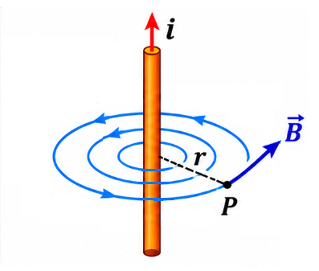
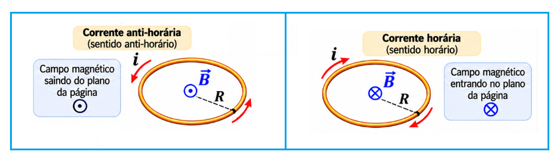
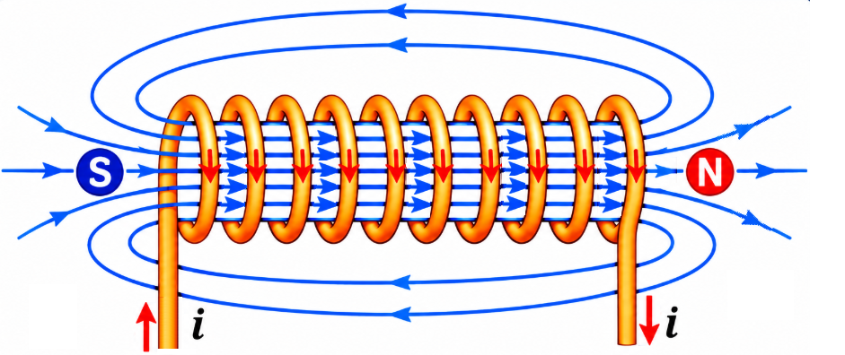

3º Ano | Aula 27: Vetor Campo Magnético em Fios, Espiras e Solenoides
📚 Resumo:
Uma corrente elétrica produz campo magnético. A geometria do condutor determina a configuração do campo e a expressão usada para calcular seu módulo.
1. Fio retilíneo longo
As linhas de campo são circunferências concêntricas ao fio. A direção é tangente às circunferências e o sentido é determinado pela regra da mão direita.
$$B=\frac{\mu_0 i}{2\pi r}$$
2. Espira circular
No centro da espira, o campo é perpendicular ao plano da espira.
$$B=\frac{\mu_0 i}{2R}$$
3. Solenoide longo
No interior de um solenoide suficientemente longo, o campo é aproximadamente uniforme e paralelo ao eixo.
$$B=\mu_0\frac{N}{L}i=\mu_0 n i$$
Nas expressões, $\mu_0$ é a permeabilidade magnética do vácuo, $i$ é a corrente, $r$ e $R$ são distâncias ou raios, $N$ é o número de espiras e $L$ é o comprimento do solenoide.
📖 Vetor Campo Magnético em Fios, Espiras e Solenoides
Na aula anterior, estudamos que a corrente elétrica produz um campo magnético ao redor do condutor. Nesta aula, vamos comparar três geometrias: um fio retilíneo, uma espira circular e um solenoide. Em cada caso, analisaremos a direção, o sentido e o módulo do vetor campo magnético $\vec{B}$.
1. Campo magnético em um fio retilíneo longo
Quando uma corrente elétrica percorre um fio retilíneo e longo, o campo magnético forma linhas circulares em planos perpendiculares ao fio. O centro dessas circunferências coincide com o próprio condutor.
Direção: tangente à circunferência de campo que passa pelo ponto considerado.
Sentido: determinado pela regra da mão direita: o polegar aponta no sentido da corrente convencional e os dedos curvados indicam o sentido de $\vec{B}$.
Módulo: depende diretamente da corrente e inversamente da distância ao fio.

Figura 1: As linhas do campo magnético são circunferências concêntricas ao fio. O sentido depende do sentido da corrente elétrica.
Para um fio retilíneo muito longo, no vácuo ou aproximadamente no ar:
$$B=\frac{\mu_0 i}{2\pi r}$$
Em que $r$ é a distância perpendicular entre o fio e o ponto onde se calcula o campo. A permeabilidade magnética do vácuo vale:
Se a corrente for duplicada, mantendo-se $r$, o campo dobra. Se a distância for duplicada, mantendo-se a corrente, o campo cai à metade.
2. Campo magnético no centro de uma espira circular
Uma espira circular é um fio condutor dobrado em forma de circunferência. Quando percorrida por corrente, cada pequeno trecho do fio produz campo magnético. No centro da espira, as contribuições se somam e o vetor resultante fica orientado ao longo do eixo da espira, isto é, perpendicular ao seu plano.
Direção: perpendicular ao plano da espira.
Sentido: determinado pela regra da mão direita. Os dedos acompanham o sentido da corrente na espira e o polegar indica o sentido do campo no centro.
Módulo: aumenta com a corrente e diminui quando o raio aumenta.

Figura 2: No centro da espira, o campo magnético é perpendicular ao plano da circunferência e paralelo ao seu eixo.
$$B=\frac{\mu_0 i}{2R}$$
$R$ é o raio da espira. Se houver $N$ espiras circulares iguais, justapostas e percorridas pela mesma corrente, os campos se somam:
$$B=\frac{\mu_0 N i}{2R}$$
Quando observamos uma face da espira: corrente no sentido anti-horário produz campo saindo do plano (símbolo $\\odot$); corrente no sentido horário produz campo entrando no plano (símbolo $\\otimes$).
3. Campo magnético no interior de um solenoide
Um solenoide é formado por um fio condutor enrolado em muitas espiras, distribuídas ao longo de um cilindro. Quando uma corrente atravessa o enrolamento, os campos produzidos pelas espiras se combinam.
No interior de um solenoide longo, as linhas de campo são aproximadamente paralelas e igualmente espaçadas. Isso indica um campo aproximadamente uniforme: em uma região central, o vetor $\vec{B}$ apresenta praticamente a mesma direção, o mesmo sentido e o mesmo módulo.

Figura 3: No interior do solenoide longo, o campo magnético é aproximadamente uniforme e paralelo ao eixo.
Para um solenoide longo, com núcleo de ar ou vácuo, o módulo do campo no interior é aproximadamente:
$$B=\mu_0\frac{N}{L}i$$
Também podemos definir a densidade linear de espiras, $n=N/L$, isto é, o número de espiras por unidade de comprimento. Assim:
$$B=\mu_0 n i$$
$N$: número total de espiras;
$L$: comprimento do solenoide, em metros;
$n$: número de espiras por metro;
$i$: corrente elétrica, em ampères.
O campo externo de um solenoide real não é rigorosamente nulo, mas pode ser muito menos intenso que o campo em sua região interna, especialmente quando o solenoide é longo em comparação com seu diâmetro.
O sentido do campo interno é encontrado pela regra da mão direita: os dedos acompanham o sentido da corrente nas espiras e o polegar aponta ao longo do eixo, no sentido de $\vec{B}$ no interior.
4. Comparação entre as três configurações
Fio retilíneo: campo circular ao redor do fio; $B$ diminui com a distância $r$.
Espira circular: campo no centro perpendicular ao plano; $B$ depende do raio $R$.
Solenoide longo: campo interno aproximadamente uniforme e paralelo ao eixo; $B$ depende da densidade de espiras e da corrente.
Em todos os casos, inverter o sentido da corrente inverte o sentido do campo magnético produzido.
5. Exemplo de cálculo: fio retilíneo
Um fio retilíneo longo é percorrido por uma corrente de $8\\,\text{A}$. Determine o campo magnético a $4\\,\text{cm}$ do fio, no vácuo.
O campo no centro tem módulo aproximado de $1,26\times10^{-5}\\,\text{T}$.
7. Exemplo de cálculo: solenoide
Um solenoide possui $500$ espiras distribuídas em um comprimento de $0,50\\,\text{m}$ e é percorrido por corrente de $0,40\\,\text{A}$. Determine o campo magnético interno, considerando o núcleo de ar.
Uma bobina percorrida por corrente pode atrair uma peça de ferro e acionar contatos elétricos. Esse princípio é usado em relés, campainhas e dispositivos de acionamento.
Motores e equipamentos
Bobinas são componentes fundamentais em motores, alto-falantes, transformadores e diversos equipamentos que utilizam a interação entre corrente elétrica e campo magnético.
Ressonância magnética
Equipamentos de ressonância magnética utilizam bobinas e sistemas magnéticos para produzir campos intensos e controlados. O princípio de campos gerados por correntes em enrolamentos é parte importante dessa tecnologia.
✅ Questões Resolvidas (R 1 a 5)
R 1: Campo em fio retilíneo
Enunciado: Um fio retilíneo longo conduz corrente de $6\\,\text{A}$. Calcule o campo magnético a $3\\,\text{cm}$ do fio, no vácuo.
Enunciado: Um solenoide longo tem $800$ espiras distribuídas em $0,40\\,\text{m}$ e conduz corrente de $0,25\\,\text{A}$. Calcule o campo magnético interno.
Enunciado: Em um ponto a uma distância $r$ de um fio, o campo vale $B$. Se a distância passar a $4r$, mantendo-se a corrente, qual será o novo campo?
Resolução: Como $B \propto 1/r$, temos $B'=B/4$.
R 5: Número de espiras
Enunciado: Um solenoide tem comprimento fixo e corrente constante. Se o número de espiras for duplicado, o que ocorre com o campo magnético interno ideal?
Resolução: Como $B=\mu_0(N/L)i$, com $L$ e $i$ constantes, duplicar $N$ duplica $B$.
✍️ Questões Propostas (P 6 a 15)
P 6: Campo em fio
Enunciado: Um fio retilíneo longo conduz corrente de $12\\,\text{A}$. Determine o campo magnético a $6\,\text{cm}$ do fio, no vácuo.
Enunciado: Mantendo o comprimento e o número de espiras constantes, a corrente em um solenoide passa de $0,2\\,\text{A}$ para $0,6\\,\text{A}$. Como varia o campo interno?
A corrente triplica; portanto, o campo magnético também triplica.
P 13: Comparação entre raios
Enunciado: Duas espiras conduzem a mesma corrente. A primeira tem raio $R$ e a segunda, raio $2R$. Compare os campos magnéticos nos centros.
Como $B\propto 1/R$, a segunda espira produz campo igual à metade do campo da primeira.
P 14: Inversão da corrente
Enunciado: O sentido da corrente em uma espira é invertido. O que acontece com o vetor campo magnético no centro?
O módulo permanece o mesmo, se a corrente mantiver a mesma intensidade, mas o sentido do vetor campo magnético se inverte.
P 15: Campo resultante em uma espira com várias voltas
Enunciado: Uma bobina circular tem $20$ espiras, raio $0,10\\,\text{m}$ e corrente de $1,5\\,\text{A}$. Determine o campo magnético no centro.